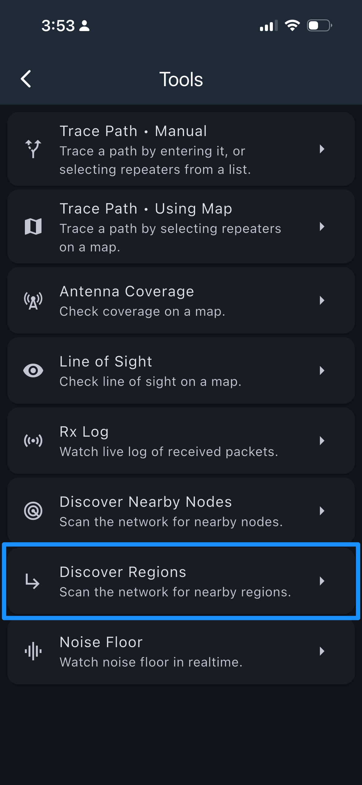
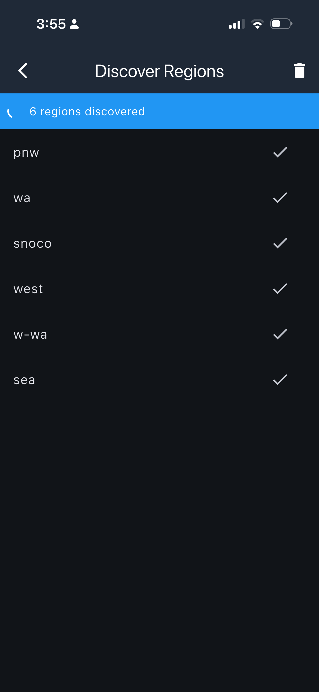
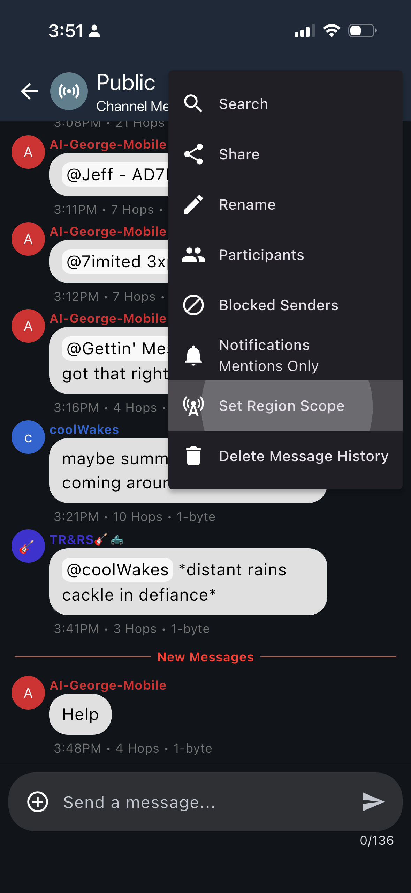
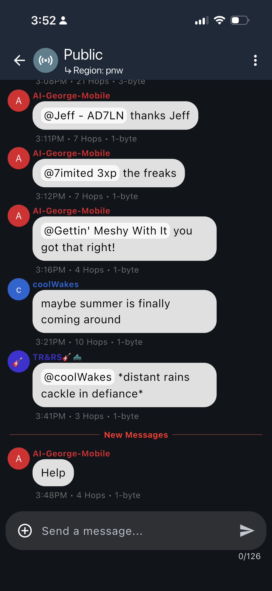

Regions are how the PNW mesh network keeps local conversations local — even as the network grows to hundreds of repeaters.
Imagine every walkie-talkie conversation in the Pacific Northwest playing on your radio at once. Without regions, that's exactly what happens — every message floods every repeater in the entire mesh.
sea stays in the Seattle area.Regions are geographic labels that tell repeaters which messages to forward. Think of them like neighborhoods — your repeater knows which neighborhoods it belongs to.
Two steps: discover which regions are active around you, then scope a channel so your messages stay where they belong.
From the main screen, tap the ⋮ menu (top-right), then choose Tools → ↳ Discover Regions. The companion scans the mesh and lists every region tag carried by repeaters it can hear.
The example here shows a Snohomish County node that responded with the full branch of its hierarchy: west → pnw → wa → w-wa → sea. The repeater also carries the snoco tag because it is in the Snohomish County part of the Seattle metro area.
Use this list to confirm which tags are actually live near you before setting a channel scope.


Open the channel you want to scope, tap its ⋮ menu, and choose
Set Region Scope
.
Type in the region tag — for a Public channel, your metro (sea, pdx) or sub-region (w-wa, or) is the right starting point.
Once set, the region appears as a subtitle under the channel name (Region: pnw). From that point on, messages sent on the channel are only forwarded by repeaters that carry that tag — keeping traffic local and preserving bandwidth in areas that don't need it.
You can change or remove the scope at any time through the same menu.


sea, pdx) or sub-region tag (w-wa, or) for a Public channel — that covers your area without flooding the wider mesh. Step up to pnw or west only for messages that genuinely need to reach the whole network — broadcasts, emergencies, or cross-region coordination.
Our region set has been designed to be hierarchical — from the entire mesh down to your local metro. Each repeater carries every level in its branch, and users can choose how wide to broadcast.
Click a scope above to see which repeaters forward that message.
The I-5 corridor stretches from Eugene, Oregon to Victoria, British Columbia. Send a message with one of the scopes above and see how far it reaches.
Select a scope above to see which repeaters forward that message.
Regions aren't just organization for its own sake — they solve real problems as the mesh grows.
Your Seattle chat doesn't bother Portland. Conversations stay in the communities where they belong.
The radio spectrum is finite. Regions prevent messages from consuming bandwidth in areas that don't need them.
As the PNW mesh grows from hundreds to thousands of repeaters, regions prevent the network from drowning in its own traffic.
You can still reach everyone — just scope wider. Send to pnw and the whole Pacific Northwest hears you.
Regions handle real communities that cross political boundaries. Repeaters can carry tags from multiple branches of the hierarchy.
pdx-scoped message reaches both sides of the river. wa-scoped traffic only reaches Clark County.ie-scoped message reaches both Spokane and Coeur d'Alene. wa-scoped traffic stays in Washington.Ready to configure regions on your repeater? These tools make it easy.